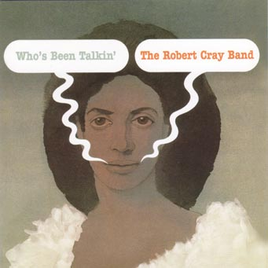

Who's Been Talkin' - Robert Cray

 Songs on the CD
Songs on the CD
-
Too Many Cooks ( W. Dixon)
-
The Score (D. Amy)
-
When THe Welfare Turns Its Back On You (S. Thompson - L. Weaver)
-
That's What I'll Do (R. Cray)
-
I'd Rather Be A Wino (D. Amy - R. Cray)
-
Who's Been Talkin' ( C. Burnett)
-
Sleeping In The Ground (S. Myers)
-
I'm Gonna Forget About You (O.V. Wright)
-
Nice As A Fool Can Be (R. Cray)
-
If You're Thinkin' What I'm Thinkin' (R. Cray)
This is yet another edition of Who's been Talking
and Too Many Cooks by Mercury Records. It has the
original cover art from the first release. It has also been "Digitally Remastered""
Back to my Cray page
Created: 7/17/03
By: rwhiffen
Mod: 7/17/03